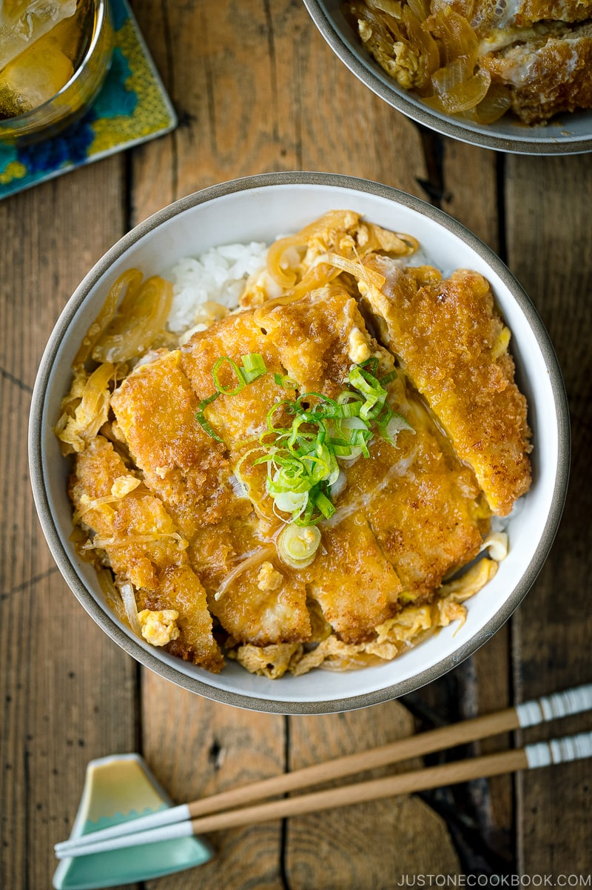

Katsudon (Pork Cutlet Rice Bowl) かつ丼

Description
The word “katsudon” is a portmanteau, or a blending of two separate Japanese words. “Katsu” comes from “tonkatsu,” or breaded, fried cutlet, and “don (丼)” comes from “donburi” (丼ぶり), which translates to “large bowl.”
This dish is primarily made up of layers of steamed rice, breaded pork cutlet, and an umami-rich sauce. There are many versions of katsudon based on the region, but everyone seems to love the addition of simmered onions and egg poured on top.
How this winning combination of pork cutlet, rice, and sauce came to be is up for debate? I have read a few fascinating theories. The dish has even become a kind of good luck charm for Japanese students!
Ingredients
For the Seasonings
- 240ml water (for the dashi packet)
- 1 dashi packet
- 2 tsp sugar
- 2 Tbsp mirin
- 2 Tbsp soy sauce
For the Katsudon
- 1/2 onion
- 1 spring onion (for garnish)
- 3 large eggs
- 2 tonkatsu (breaded and fried pork cutlet)
- 2 servings cooked Japanese short-grain rice
Steps
Before You Start
Gather all the ingredients. For the steamed rice, please note that 1½ cups (300 g, 2 rice cooker cups) of uncooked Japanese short-grain rice yield 4⅓ cups (660 g) of cooked rice, enough for 2 donburi servings (3⅓ cups, 500 g).
To Make the Dashi
- In a small pot, add 240 ml water and 1 dashi packet. Start cooking over medium heat. Tip: While I used a dashi packet here, you can substitute it with standard Awase Dashi, dashi powder, or Vegan Dashi.
- After it starts boiling, reduce the heat to medium-low heat and simmer for 2 minutes. Shake the bag a few times to get more flavors out. Discard the packet and dashi is ready to use.
To Prepare the Ingredients
- Thinly slice ½ onion and 1 green onion/scallion. I highly recommend cutting the onion thinly to reduce the cooking time.
- Crack 3 large eggs (50 g each w/o shell) into a medium bowl. Using a pair of chopsticks, lift the egg whites to “cut“ them 5–6 times into a few smaller clumps so the yolks and whites are marbled. This will prevent the egg whites from falling into the frying pan all at once. Do not whisk or beat the eggs together. Tip: Aim for high color contrast between the white and yellow parts of the eggs in your finished dish.
- Cut 2 tonkatsu into pieces 1 inch (2.5 cm) thick.
To Cook the Katsudon
- In a large frying pan that can fit 2 tonkatsu pieces, place the onion slices in a single layer. Then, add the dashi to the pan.
- Cover the frying pan with a tight-fitting lid (so the broth does not evaporate too quickly). Then, turn on the heat to medium and start cooking until the onion is tender and almost translucent.
- Then, add 2 tsp sugar and 2 Tbsp mirin.
- Add 2 Tbsp soy sauce and mix together.
- Place the tonkatsu over the onion and cover with the lid to reheat the tonkatsu, about 2 minutes. The bottom of the tonkatsu will absorb the broth.
- Once the tonkatsu is reheated and the broth is simmering, evenly distribute the egg over the tonkatsu and onion in a circular pattern, avoiding the edges of the pan where the egg can easily overcook. (If you prefer to cook your green onion slices, add them over the egg mixture now.) Cover with the lid for 1 minute, or until the egg is just set.
To Serve
- Divide 2 servings cooked Japanese short-grain rice into large donburi bowls. Place the tonkatsu, onion, and egg mixture on top. Drizzle with extra broth, if you‘d like. Garnish with sliced green onion and serve immediately.
To Store
- You can keep the leftovers in an airtight container and store them in the refrigerator for up to 3–4 days.
*Original Recipe Credit*
Click here to access original recipe